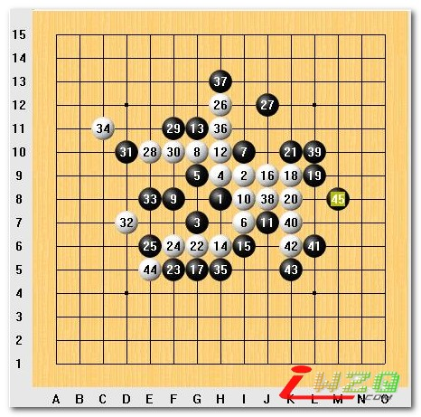
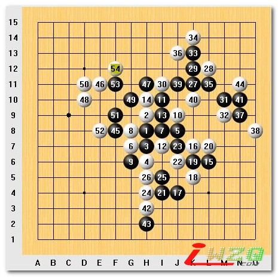
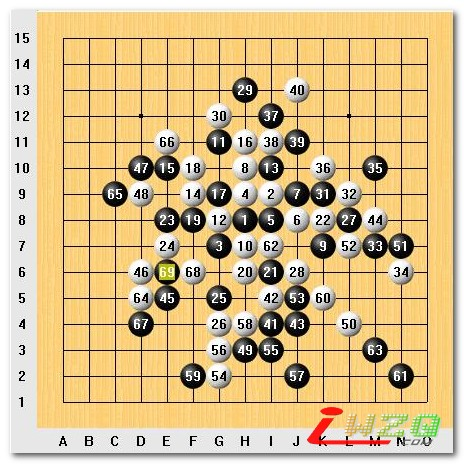

名人战感想
#1 名人战感想 作者：有志青年 发表时间：2007-6-3 9:55:54
准备评述我委琐的比赛过程,下面写一盘赢棋,一盘和棋,一盘输棋(真正意义上的赢棋与输棋实际各一盘,和棋选择就多了)
赢棋篇:仇云飞(黑)胜矶部泰山(ISOBE TAIZAN)(白)

这盘棋是我名人赛唯一一盘赢棋，前１２手正常走法，１３最近比较流行的下法，１４，１５定式。矶部九段开始长考，１６弱手，此后到２１手我自认为黑棋已然大优，到２５手正以为我可以顺利进攻取胜的时候，２６！很强大的一手，瞄准我的四四禁手进行一搏，我痛苦的长考３０分钟，２７！最强手，阻止了白棋的所有后续手段，２８想最后一骗，但这样的当我是不会上的，３０，３２防守，３３！３４唯一，但白棋败局已定……这盘的胜利也使我避免了小组淘汰的尴尬局面，不过也正因为过多考虑出线，让我前两盘下的极端保守，而这种局面竟然也赢的这么辛苦，慨叹矶部前辈宝刀不老之余，也应该自我检讨一下了，委琐的追求，什么时候才能不考虑名次而真正享受比赛呢。

非常郁闷的一盘棋，跟山口大斗两个多小时之后太疲劳了，而且精神过于放松导致这盘棋竟然漏掉一次３步Ｖ，不可饶恕的错误。
吴昊开出松月，我交换后打了正常位的５手，吴昊选择了这个１２手的变化（据说正常位５这个１２的变化黑杀不掉）此后正常进行到２３，２４？看似交换干净但同时也给了我在上方攻击的机会，２７！黑棋攻击的开始，２８强防，２９！自我感觉的攻击强手，３０无奈，３１！继续扩大优势３２最强，３３活三拓展，３４唯一，３５后３６唯一，这时！！！３７下到４４位我将获取胜利！但是！实战莫名其妙的选择了这个３７，太注重白的反了而没仔细去验算，错失胜机的同时也宣布黑棋的死亡，白棋依靠左边巨大优势把我做死了：（，委琐的思想，懈怠的精神，导致了低级失败的发生。
和棋篇:山口釉水(YAMAGUCHI YUSUI)(黑)和仇云飞(白)

来名人赛前最想下的一盘棋，幸好我小组出线争取到了与山口前名人的对局机会，也是宝贵的衡量自己的一次机会，过程不想技术性评价了，满盘受虐后的和棋。让我产生了重新审视自己棋风的念头，本次比赛基本上都是被攻大半盘，而抢回先手时已没有反攻的机会，战术单调，行棋过于保守，当人有了一些东西总想去保，从而失去了创业时的激情，我可不想成为其中的一员。